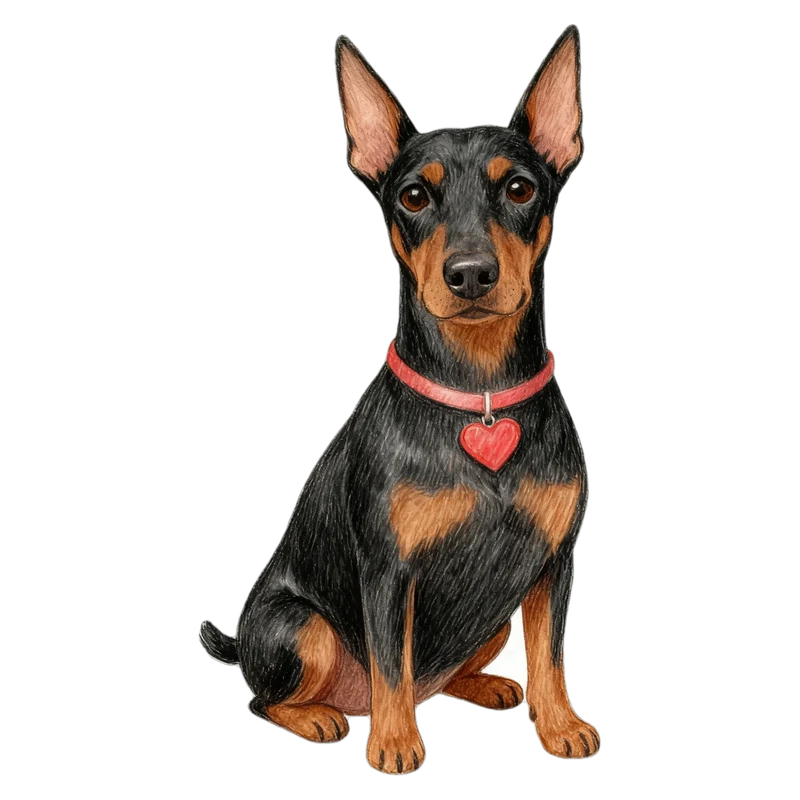

結果の言い方 見本
見た目はパグ、性格がいちばん近いのはドーベルマンだった「こむぎ」の例です。
いまの言い方

44Wansonalities

こむぎ
元気いっぱいタイプの
ドーベルマンハートのパグ
「○○ハートの」が、はじめての人には少しわかりにくい。
案A 見た目は／中身は（おすすめ）
44Wansonalities
こむぎ
見た目はパグ中身はドーベルマン
元気いっぱいタイプ
よいところ一度で意味がわかる。合言葉「中身は何犬？」の答えになる。
案B ○○型
44Wansonalities
こむぎ
元気いっぱいタイプの
ドーベルマン型のパグ
よいところ短くて、血液型のように会話で言いやすい。
案C ワンソナは
44Wansonalities
こむぎ
こむぎのワンソナはドーベルマン
元気いっぱいタイプ
よいところ「ワンソナ」という言葉そのものが広まる。
ほかの場面ではこうなります
| 場面 | いま | 案A | 案B | 案C |
|---|---|---|---|---|
| 中身も同じ犬種 | 生粋のパグ | 見た目も中身もパグ | パグ型のパグ（生粋） | こむぎのワンソナは パグ（生粋） |
| 保護犬の子 | 世界にひとりだけの、ドーベルマンハートの子 | 中身はドーベルマン | ドーベルマン型の子 | さくらのワンソナは ドーベルマン |
| ミックスの子 | ドーベルマンハートのミックス | 見た目はミックス、中身はドーベルマン | ドーベルマン型のミックス | モカのワンソナは ドーベルマン |
| 図鑑・ワン友帳（短く） | ドーベルマンハートのパグ | 中身はドーベルマン | ドーベルマン型 | ワンソナ：ドーベルマン |
| 名刺の大見出し | ドーベルマンハートのパグ | 見た目はパグ、中身はドーベルマン | ドーベルマン型のパグ | ワンソナは ドーベルマン |
シェアしたときの文
性格の言葉（元気いっぱいタイプ など）は、どの案でも小さく残します。